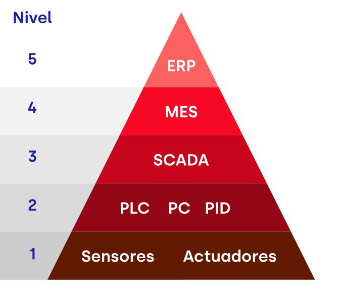

Ela possui cinco níveis principais: Nível Função Exemplos 0 Processo físico Motores, válvulas e máquinas. 1 Sensoriamento e atuação Sensores e atuadores. 2 Controle CLPs e controladores. 3 Supervisão e produção SCADA e sistemas de produção. 4 Gestão empresarial ERP e planejamento. As tecnologias de comunicação podem atuar em diferentes níveis dessa pirâmide. Por exemplo: - IO-Link: comunicação com sensores e atuadores. - PROFINET: comunicação entre controladores e equipamentos. - Ethernet: integração de computadores e sistemas. - MQTT e OPC UA: integração de dados e sistemas industriais.
